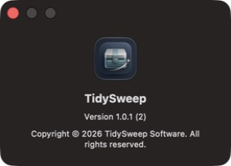

macOS 13+ · Version 1.0.1
TidySweep for Mac
Uninstall apps, review related files, and clean unnecessary caches with clarity and control.
Current build is ad-hoc signed and not Apple-notarized. See the FAQ for first-launch instructions.
Product screenshots


